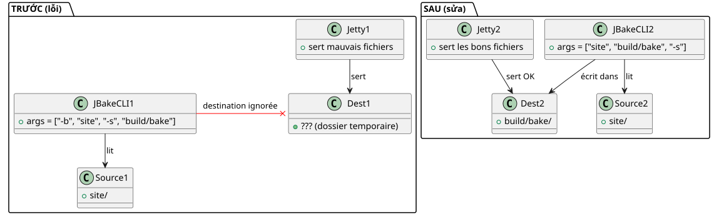

Tại sao `serve` lại hiển thị một trang web xấu trong khi `publishSite` lại hoàn hảo
Đăng ngày 22 April 2026
Bạn có biết cái khoảnh khắc khi trang web chạy local của bạn trông chẳng ra sao, nhưng một khi triển khai lên trực tuyến thì mọi thứ lại hoàn hảo không? Đó chính là điều đã xảy ra với plugin Gradle JBake của tôi. Tác vụ`serve`hiển thị các nút hình vuông, chữ tối màu trên nền đen, và một CSS vắng mặt một cách kỳ lạ. Tuy nhiên`publishSite`tạo ra cùng một trang web, còn anh ta thì hoàn hảo. Thủ phạm không phải là CSS, trình duyệt, cũng không phải bộ nhớ đệm. Đó là một dòng mã Kotlin — và một thói quen xấu với các đối số dòng lệnh.
- mục lục
-
[]
Bối cảnh: bốn ảnh chụp màn hình, hai bản render
Đó là sau một sự cố sập hệ thống. Tôi đã chụp bốn ảnh màn hình để so sánh kết quả hiển thị cục bộ (./gradlew serve`trên`localhost:8820) với trình kết xuất trực tuyến (`publishSite`trên GitHub Pages). Hai ảnh chụp màn hình mỗi trang: phần trên và phần dưới.
Kết xuất cục bộ
Đầu trang— Các nút Project và Template lànhỏ, hình chữ nhật, với màu tiêu chuẩn (xanh dương và xanh lá). Thẻ Start Writing có mộtnền đen trơn, không khung.

Chân trang— Phụ đề "Derniers articles et ressources" làgần như không thể đọc được, quá đậm trên nền đen. Các ngày tháng dưới hình ảnh blog ("17 October 2013", v.v.) thìvắng mặtVui lòng cung cấp văn bản tiếng Pháp cần dịch.

Kết xuất trực tuyến
Đầu trang— Các nút tương tự làlớn, hình bầu dục, màu xanh neon sặc sỡ, văn bản viết hoa. Bản đồ có mộtkhung trắng bo góc với đổ bóngVui lòng cung cấp văn bản cần dịch.

Chân trang— Phụ đề làdễ đọc. Các ngày làhiển thị. Các thẻ sản phẩm có cácbo góc trònvà các tiêu đề làin đậmHãy cung cấp nội dung cần dịch.

Phản xạ đầu tiên: chủ đề. Tôi sử dụng một hệ thống chủ đề động (sáng, tối, độ tương phản cao) dựa trên`localStorage`. Có lẽ local store đã kích hoạt một theme high-contrast? Không. Tôi đã viếthttps://cheroliv.com/blog/2025/0098_preloading_css_variable_post.html[một bài viết đầy đủ về việc tải trước các chủ đề], tôi biết nó hoạt động như thế nào. Và rồi, ngay cả ở chế độ high-contrast, cấu trúc CSS (nút hình bầu dục, đổ bóng) lẽ ra phải xuất hiện. Nhưng nó đã không có.
Phản xạ thứ hai: bộ nhớ đệm trình duyệt. Không, tôi đã thử nghiệm với các hồ sơ sạch. Sự khác biệt vẫn còn.
Phản xạ thứ ba:`serve`không cung cấp cùng các tệp như`publishSite`Please provide the text you would like me to translate.
Chẩn đoán: serve không trỏ đúng thư mục
Plugin Gradle của tôi`bakery`có hai nhiệm vụ chính:
-
bake: tạo trang web tĩnh trong`build/bake/` -
serve: khởi chạy một máy chủ web cục bộ -
publishSite: đẩy`build/bake/`sang GitHub Pages
Sự sai lệch chỉ có thể đến từ`serve`. Si `publishSite`xuất bản nội dung chính xác, đó là`build/bake/`đã tốt. Nếu`serve`hiển thị thứ khác, nghĩa là nó không hoạt động`build/bake/`Vui lòng cung cấp văn bản cần dịch.
Hãy cùng xem mã. Trong`SiteManager.kt`, tác vụ`serve`được định nghĩa như sau:
tasks.register("serve", JavaExec::class.java) { task ->
task.apply {
mainClass.set("org.jbake.launcher.Main")
classpath = jbakeRuntime
environment("GEM_PATH", jbakeRuntime.asPath)
jvmArgs(/* ... */)
args = listOf(
"-b", file(site.bake.srcPath).absolutePath,
"-s", layout.buildDirectory.get()
.asFile.resolve(site.bake.destDirPath)
.absolutePath
)
}
}org.jbake.launcher.Main`là điểm nhập của CLI JBake 2.7.0. Ý tưởng là: truyền-b`cho thư mục nguồn và`-s`cho thư mục đích, sau đó khởi động chế độ máy chủ. Có điều là…
Nguyên nhân gốc rễ: JBake CLI không hoạt động theo cách đó
JBake 2.7.0 mong đợi cáccác đối số vị trícho nguồn và đích, sau đó là các cờ tùy chọn. Chữ ký là:
jbake <source> <destination> [options]Nhưng trong mã của tôi, tôi đã viết:
args = listOf("-b", "/path/to/site", "-s", "/path/to/build/bake")JBake hiểu điều đó là:
-
-b→ phân tích flag "bake" (kiểu boolean), đã tiêu thụ -
/path/to/site→ trở thành đối số vị trí 1 (source) -
-s→ phân tích flagserve(kiểu boolean), máy chủ đã khởi chạyngay lập tức -
/path/to/build/bake→ trở thành một đối số mồ côi, bị bỏ qua hoặc bị hiểu sai
Kết quả: JBake đã lấy`/path/to/site`như là nguồn,không tính đến điểm đếncung cấp (build/bake), và sử dụng thư mục mặc định của mình (thường`./output`hoặc một bản sao tạm thời). Tệp`css/styles.css`bản build vì vậy đã bị ghi đè hoặc bị bỏ qua, và một tệp CSS mặc định cũ (không có các biến custom, không có bo góc, không có đổ bóng) đã được cung cấp.
So với,bake et publishSite`sử dụngplugin Gradle JBake chính thức(`jbake-gradle-plugin) viết một cách sạch sẽ trong`build/bake/`qua API Gradle. Chúng không thông qua CLI.
Giải pháp: đối số theo vị trí, không phải là các flag
Việc khắc phục là rất đơn giản — một khi ta đã biết. Chỉ cần truyền source và destination làm các đối số theo vị trí (positional arguments), sau đó`-s`cuối cùng:
args = listOf(
file(site.bake.srcPath).absolutePath,
layout.buildDirectory.get()
.asFile.resolve(site.bake.destDirPath)
.absolutePath,
"-s"
)Vậy là xong. Ba dòng thay đổi, bug đã được giải quyết.
Sau khi xuất bản plugin cục bộ (publishToMavenLocal), un `./gradlew serve`chạy JBake với cú pháp chính xác:
jbake /home/user/project/site /home/user/project/build/bake -sVà lần này, máy chủ Jetty tích hợp trong JBake sẽ phục vụ nội dung của`build/bake/`— giống hệt với nội dung được đăng trực tuyến.

Kiểm tra nhanh với `curl
Để đảm bảo rằng máy chủ cung cấp đúng nội dung, một bản`curl`xác nhận rằng`index.html`chứa`data-bs-theme="light"`và rằng`build/bake/css/styles.css`nặng đúng 31 402 octets — giống hệt với tệp được tạo bởi`bake`Vui lòng cung cấp nội dung cần dịch.
$ ./gradlew serve
# Dans un autre terminal :
$ curl -s http://localhost:8820/ | grep data-bs-theme
<html ... data-bs-theme="light" ...>
$ curl -I http://localhost:8820/css/styles.css
HTTP/1.1 200 OK
Content-Length: 31402
Content-Type: text/cssViệc kết xuất cục bộ giờ đâygiống hệt từng pixelđến bản render đã triển khai.
Tại sao lỗi này lại hiểm hóc
Bạn thấy tại sao nó lại khó bắt như vậy không?
-
Không có lỗi rõ ràng: JBake không bị crash. Nó vẫn "hoạt động", chỉ là với một thư mục sai.
-
Bản build đã hoạt độngHãy cung cấp văn bản cần dịch.`./gradlew bake`đã tạo chính xác các tệp trong`build/bake/`Vui lòng cung cấp văn bản cần dịch.
-
Quá trình triển khai đã hoạt độngHãy nhập giá trị cho
argumentvào đây:`publishSite`đã thúc đẩy nội dung tốt trực tuyến. -
Chỉ có
servebị hỏng: tác vụ phát triển, tác vụ mà chúng ta sử dụng liên tục để lặp lại. -
Thói quen dùng
-key value: với tư cách là một nhà phát triển, chúng ta bị chi phối bởi nhiều năm sử dụng CLI Unix (-o output`,-i input). JBake CLI là một ngoại lệ — nguồn và đích là các đối số vị trí.
Kết luận
Nếu bạn đang duy trì một plugin Gradle bao bọc JBake (hoặc bất kỳ công cụ CLI nào),hãy đọc tài liệu về các đối sốngay cả khi bạn nghĩ rằng mình đã biết chúng. Một giả thuyết ngầm định (-s= "set destination") có thể khiến bạn mất hàng giờ để debug về mặt hình ảnh.
Ở đây, bản sửa lỗi đơn giản là thay đổi:
args = listOf("-b", src, "-s", dest) // ❌ BUGen :
args = listOf(src, dest, "-s") // ✅ FIXBa token được di chuyển, và trang web local của tôi trở lại đẹp như trang web trên production.
Bài học: khi kết quả hiển thị giữa môi trường local và prod khác nhau mà không có lý do rõ ràng, trước hết hãy nghi ngờ pipeline — không phải CSS, không phải trình duyệt, và càng không phải framework. Thông thường, chính bước ngay trước khi render là nơi gây ra sai sót.